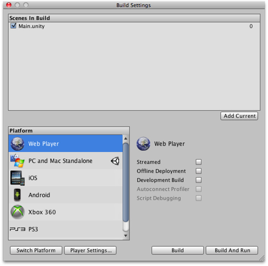
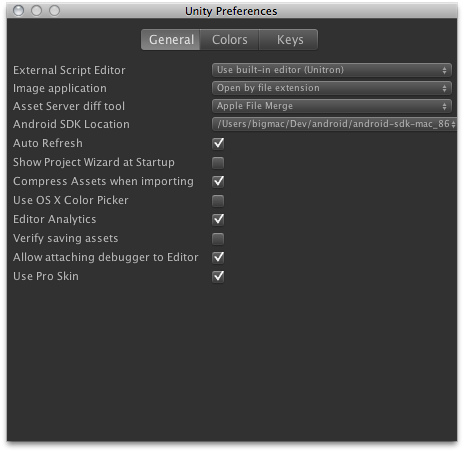
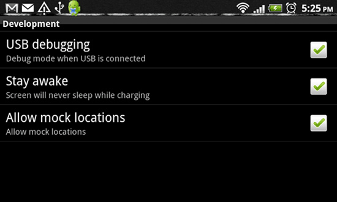
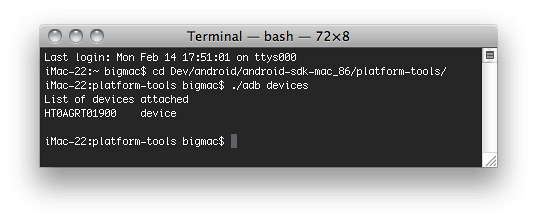

Publishing Builds
At any time while you are creating your game, you might want to see how it looks when you build and run it outside of the editor as a standalone or web player. This section will explain how to access the Build Settings and how to create different builds of your games.
is the menu item to access the Build Settings window. It pops up an editable list of the scenes that will be included when you build your game.

The Build Settings window
The Build Settings window
The first time you view this window in a project, it will appear blank. If you build your game while this list is blank, only the currently open scene will be included in the build. If you want to quickly build a test player with only one scene file, just build a player with a blank scene list.
It is easy to add scene files to the list for multi-scene builds. There are two ways to add them. The first way is to click the button. You will see the currently open scene appear in the list. The second way to add scene files is to drag them from the Project View to the list.
At this point, notice that each of your scenes has a different index value. Scene 0 is the first scene that will be loaded when you build the game. When you want to load a new scene, use Application.LoadLevel() inside your scripts.
If you've added more than one scene file and want to rearrange them, simply click and drag the scenes on the list above or below others until you have them in the desired order.
If you want to remove a scene from the list, click to highlight the scene and press . The scene will disappear from the list and will not be included in the build.
When you are ready to publish your build, select a Platform and make sure that the Unity logo is next to the platform; if its not then click in the button to let Unity know which platform you want to build for. Finally press the button. You will be able to select a name and location for the game using a standard Save dialog. When you click , Unity builds your game pronto. It's that simple. If you are unsure where to save your built game to, consider saving it into the projects root folder. You cannot save the build into the Assets folder.
Enabling the Development Build checkbox on a player will enable Profiler functionality and also make the Autoconnect Profiler and Script Debugging options available.
 Desktop
Desktop
Web Player Streaming
Streaming Web Players allow your Web Player games to begin playing as soon as Scene 0 is finished loading. If you have a game with 10 levels, it doesn't make much sense to force the player to wait and download all assets for levels 2-10 before they can start playing level 1. When you publish a Streaming Web Player, the assets that must be downloaded will be sequenced in the order of the Scene file they appear in. As soon as all assets contained in Scene 0 are finished downloading, the Web Player will begin playing.
Put simply, Streaming Web Players will get players playing your game faster than ever.
The only thing you need to worry about is checking to make sure that the next level you want to load is finished streaming before you load it.
Normally, in a non-streamed player, you use the following code to load a level:
Application.LoadLevel("levelName");
In a Streaming Web Player, you must first check that the level is finished streaming. This is done through the CanStreamedLevelBeLoaded() function. This is how it works:
var levelToLoad = 1;
function LoadNewLevel () {
if (Application.CanStreamedLevelBeLoaded (levelToLoad)) {
Application.LoadLevel (levelToLoad);
}
}
If you would like to display the level streaming progress to the player, for a loading bar or other representation, you can read the progress by accessing GetStreamProgressForLevel().
Offline webplayer deployment
If the Offline Deployment option is enabled for a webplayer then the UnityObject.js file (used to interface the player with the host page) will be placed alongside the player during the build. This enables the player to work with the local script file even when there is no network connection; normally, UnityObject.js is downloaded from Unity's webserver so as to make use of the latest version.
Building standalone players
With Unity you can build standalone applications for Windows and Mac (Intel, PowerPC or Universal, which runs on both architectures). It's simply a matter of choosing the build target in the build settings dialog, and hitting the 'Build' button. When building standalone players, the resulting files will vary depending on the build target. On Windows an executable file (.exe) will be built, along with a Data folder which contains all the resources for your application. On Mac an app bundle will be built, containing the file needed to run the application, as well as the resources.
Distributing your standalone on Mac is just to provide the app bundle (everything is packed in there). On Windows you need to provide both the .exe file and the Data folder for others to run it. Think of it like this: Other people must have the same files on their computer, as the resulting files that Unity builds for you, in order to run your game.
Inside the build process
The building process will place a blank copy of the built game application wherever you specify. Then it will work through the scene list in the build settings, open them in the editor one at a time, optimize them, and integrate them into the application package. It will also calculate all the assets that are required by the included scenes and store that data in a separate file within the application package.
- Any GameObject in a scene that is tagged with 'EditorOnly' will be not be included in the published build. This is useful for debugging scripts that don't need to be included in the final game.
- When a new level loads, all the objects in the previous level are destroyed. To prevent this, use DontDestroyOnLoad() on any objects you don't want destroyed. This is most commonly used for keeping music playing while loading a level, or for game controller scripts which keep game state and progress.
- After the loading of a new level is finished, the message: OnLevelWasLoaded() will be sent to all active game objects.
- For more information on how to best create a game with multiple scenes, for instance a main menu, a high-score screen, and actual game levels, see the Scripting Tutorial.pdf
Android
The Android application build process is performed in two steps:
- Application package (.apk file) is generated with all the required libraries and serialized assets.
- Application package is deployed on the actual device.
When "Build" is hit on "Build settings" dialog only the first step is accomplished. Hitting "Build and Run" performs both steps. If Cmd+B is hit then the automatic build and run process is invoked and the latest used file is assumed as the build target.
Upon the first attempt to build an Android project, Unity would ask you to locate the Android SDK, that is required to build and install your Android application on the device. You can change this setting later in .

When building the app to the Android, be sure that the device has the "USB Debugging" and the "Allow mock locations" checkboxes checked in the device settings.

You can ensure that the operating system sees your device by running adb devices command found in your Android SDK/platform-tools folder.
This should work both for Mac and Windows.

Unity builds an application archive (.apk file) for you and installs it on the connected device. In some cases your application cannot autostart like on iPhone, so you need to unlock the screen, and in some rare cases find the newly installed application in the menu.
Texture Compression
Under Build Settings you'll also find the option. By default, Unity uses ETC1/RGBA16 texture format for textures that don't have individual texture format overrides (see Texture 2D / Per-Platform Overrides).
If you want to build an application archive (.apk file) targeting a specific hardware architecture, you can use the option to override this default behavior. Any texture that is set to not be compressed will be left alone; only textures using a compressed texture format will use the format selected in the option.
To make sure the application is only deployed on devices which support the selected texture compression, Unity will edit the AndroidManifest to include tags matching the particular format selected. This will enable the Android Market filtering mechanism to only serve the application to devices with the appropriate graphics hardware.
Preloading
Published builds automatically preload all assets in a scene when the scene loads. The exception to this rule is scene 0. This is because the first scene is usually a splashscreen, which you want to display as quickly as possible.
To make sure all your content is preloaded, you can create an empty scene which calls Application.LoadLevel(1). In the build settings make this empty scene's index 0. All subsequent levels will be preloaded.
You're ready to build games
By now, you have learned how to use Unity's interface, how to use assets, how to create scenes, and how to publish your builds. There is nothing stopping you from creating the game of your dreams. You'll certainly learn much more along the way, and we're here to help.
To learn more details about using Unity itself, you can continue reading the manual or follow the Tutorials.
To learn more about Components, the nuts & bolts of game behaviors, please read the Component Reference.
To learn more about Scripting, please read the Scripting Reference.
To learn more about creating Art assets, please read the Assets section of the manual.
To interact with the community of Unity users and developers, visit the Unity Forums. You can ask questions, share projects, build a team, anything you want to do. Definitely visit the forums at least once, because we want to see the amazing games that you make.
Page last updated: 2011-10-31